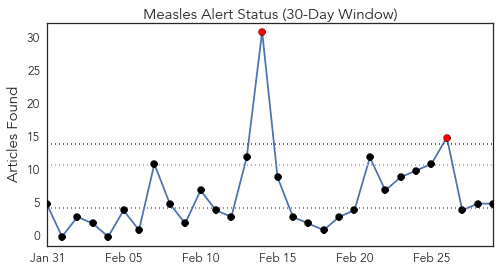
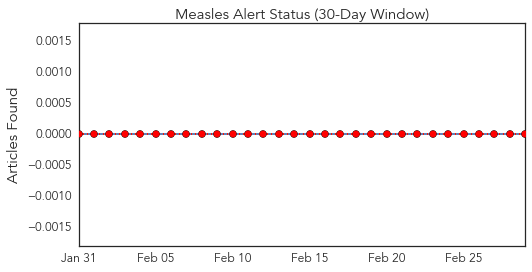
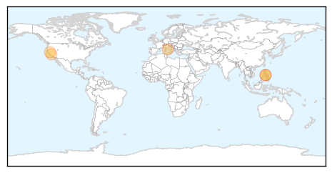
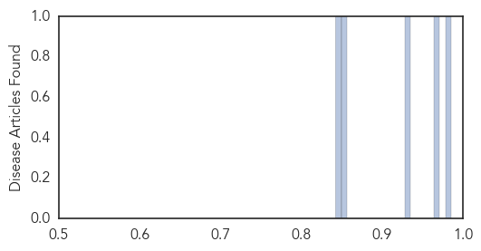

Toggle navigation
Early Warning
Daily Alerts
Measles
Mar 01, 2014
Compare to:
-
Dengue Fever
Hemmorhagic Fever
Mold/Fungal Infection
Influenza
Meningitis
Pertussis / Whooping Cough
Middle East Respiratory Syndrome
Cholera
Hepatitis
Chikungunya
Yellow Fever
Bubonic Plague
West Nile Virus
Swine Flu
Ebola
Unknown
Mumps
30 Day Trends
Web: 2
alerts
, 0
warnings
Twitter: 0
alerts
, 0
warnings
Top Articles:
0.985
Measles outbreak reported on Costa Pacifica cruise ship , dozens affected
0.966
Two relatives of infected UC Berkeley student have measles, health officials say
0.930
Two relatives of UC Berkeley student who contracted measles have come down with the disease
0.852
Health outbreaks not linked
0.842
California health officials
Top Tweets:
No tweets found for Mar 01, 2014
Web/News Articles

Tweets

Article Locations

Article Confidences
